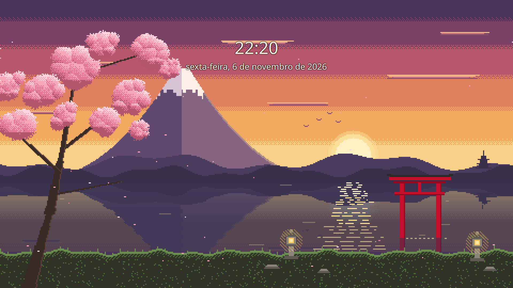

V5 — login e bloqueio Washi
Proposta. Nada foi aplicado e o SDDM não foi reiniciado.
As imagens são pré-visualizações reais, não maquetes. O login foi renderizado pelo próprio greeter do SDDM (
sddm-greeter-qt6 --test-mode),
e o bloqueio pelo próprio greeter do Plasma (kscreenlocker_greet --testing), com uma configuração temporária.
No modo de teste do login, os botões de energia aparecem apagados porque ali não podem ser usados, e o usuário não vem selecionado (nome a 50%).
No login real os dois aparecem normais.Login (SDDM) — tema "washi"

Como ler esta prévia. Ela foi capturada sem foco e sem interação, para não desviar o seu teclado. Por isso o Breeze já estava
escondendo o formulário (cerca de 55% de opacidade): o esmaecido geral não é falta de contraste.
Desativados pelo modo de teste: Suspender, Reiniciar e Desligar (o greeter de teste não pode usá-los); "Outros…" está ativo.
Contraste calculado, não medido na tela: texto marfim sobre o painel ≈ 12:1; campo de senha (texto sumi sobre washi) 12,7:1.
Para ver o formulário 100% visível, rode
themes/washi/scripts/previa-login.sh e mexa o mouse sobre a janela.
O login real só fica validado depois de aplicar e testar num logout de verdade.
| Elemento | Proposta | Status |
|---|---|---|
| Relógio e data | DotGothic16 em 64 e 32 px (múltiplos de 16, nítidos) | muda |
| Fundo | Papel de parede Washi v2 | muda |
| Logo do rodapé | Torii pixel no lugar do logo Debian | muda |
| Cores do formulário | Esquema Washi copiado para o usuário sddm (o mesmo que o botão "Aplicar configurações do Plasma" faz) | muda |
| Cursor | washi-cursor de 32 px instalado para o sistema | muda |
| Campo de senha, usuário, seleção de sessão, teclado, mensagem "Falha no login", botões Suspender, Reiniciar e Desligar | Iguais ao Breeze: Login.qml, SessionButton.qml e KeyboardButton.qml são o código original, para preservar a legibilidade e as funções | inalterado |
| Fundo com o formulário aberto | Sem desfoque e sem ajuste de cor (WashiFader.qml); a leitura fica garantida por um painel sumi com borda washi de 2 px e sombra dura atrás do formulário (Main.qml, fora do layout do Breeze) | muda |
Bloqueio de tela

| Elemento | Proposta | Status |
|---|---|---|
| Fundo | Papel de parede Washi v2 (pacote Washi-v2) | muda |
| Cores do campo de senha e dos botões | Já seguem o esquema Washi | já aplicado |
| Relógio em fonte pixel | O visual do bloqueio pertence ao shell do Plasma 6.3. Mudar a fonte exigiria sobrepor o shell inteiro, com risco de quebrar o desbloqueio. O relógio fica na fonte do sistema (Noto Sans), legível | limitação |
Aplicação (quando você aprovar)
# 1) bloqueio — usuário comum, efeito imediato (teste: Meta+L) ~/ukiyo/themes/washi/scripts/aplicar-v5-bloqueio.sh # 2) login — precisa de sudo; vale no próximo logout/boot (não reinicia o SDDM) sudo ~/ukiyo/themes/washi/scripts/aplicar-v5-login.sh
O passo 2 instala /usr/share/sddm/themes/washi, /usr/share/icons/washi-cursor, /etc/sddm.conf.d/10-washi.conf e
/var/lib/sddm/.config/kdeglobals. Antes de instalar, faz backup de tudo isso em backups/<data>-washi-v5-login/.
Restauração
~/ukiyo/themes/washi/scripts/restaurar-v5-bloqueio.sh sudo ~/ukiyo/themes/washi/scripts/restaurar-v5-login.sh
Emergência, se a tela de login não aparecer ou não aceitar a senha:
Ctrl+Alt+F3e login em modo texto com seu usuário;sudo rm /etc/sddm.conf.d/10-washi.conf, que volta ao tema padrão do Debian;sudo systemctl restart sddm, ou reinicie o computador.
Se o tema configurado faltar, o SDDM cai no tema padrão; por isso remover esse único arquivo resolve.